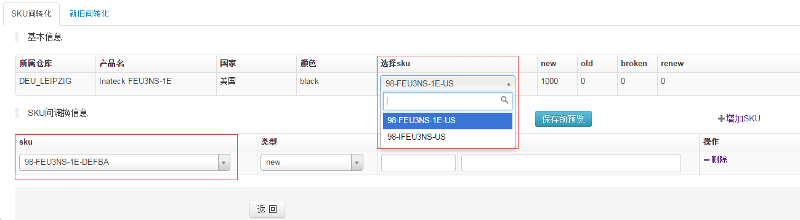
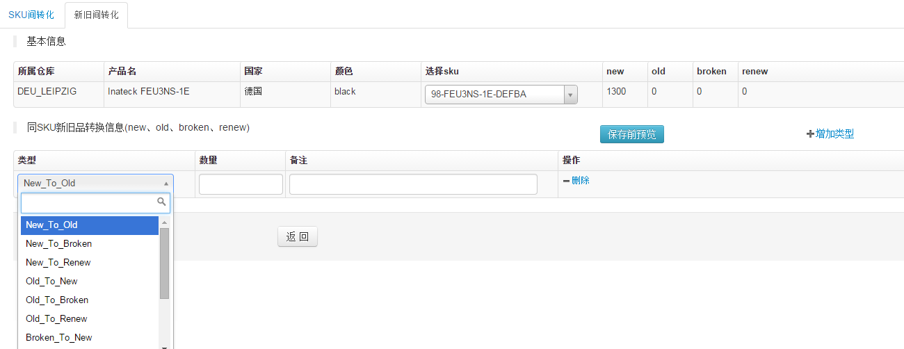
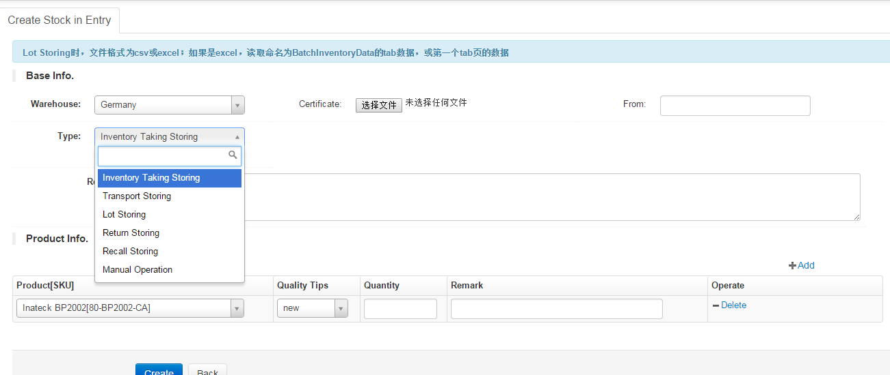
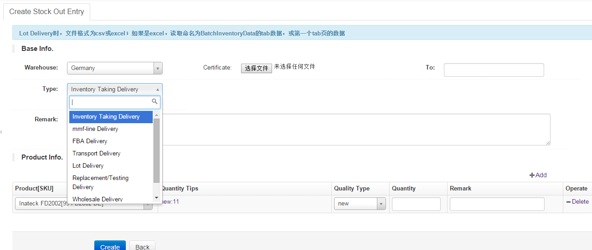

库存管理
1、库存管理列表页面,如下图

- 本页面可对库存进行：出库、入库、sku调整、产品质量库存调整、各种库存变化日志
- 如上图，如果点击“In-Out Detail”进入出入库明细页面；点击“Adjust Details”可查看库内同产品同颜色任意平台间的sku调换信息
- 点击上图“Sku Change”按钮进入2页面
- 点击上图“QualityType Change”按钮进入3页面
2、Sku Change页面,如下图

- 选择要转化产品sku（如果该产品只有一个sku则不用选择），在调换信息里选择要调换后的sku及类型和数量（相同sku和类型只能有一条数据）；点击“保存前预览”可以看到保存后的数量对比
3、QualityType Change页面,如下图

- 可选择要调换的sku，在调换项里面可以选择各种转换方式，点击保存前预览可以看到转换后的库存各类型的数量
4、入库页面,如下图

- 如上图当选择”手动填写类型”会出现一个输入框，可填入没有的类型
- 如果选择运输入库，界面如下图，选择运单编号后会带出该运单的详细信息（红线框内部分），同时可以增加出库产品（红线框外部分），点击入库后会同时改变所选择的运单详细信息
- 如果选择的批量入库，界面如下图，选择csv或者excel的文件和本次入库的产品质量类型（new、old、broken、renew）；csv的格式如下图（1），数量可没有、默认数量为1，sku可重复，重复数量会累加；excel格式与csv一样，从第一行开始读起，如果excel有sheet命名为BatchInventoryData会优先使用该sheet，如果没有该文件会默认第一个sheet进行读取
5、出库页面,如下图

- 该功能与入库单是相反的功能，基本操作差不多,相同部分不再重述
- 如果出库类型选的是FBA发货，界面如下图，选择“去向”后自动带出fba贴名称，选择fba贴后 自动带出产品信息